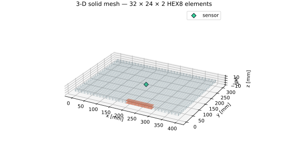
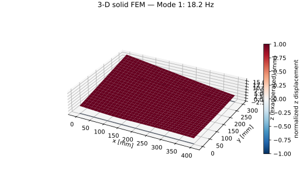
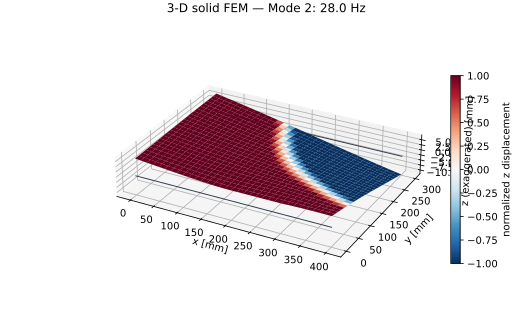
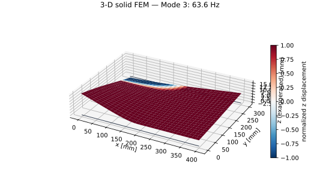
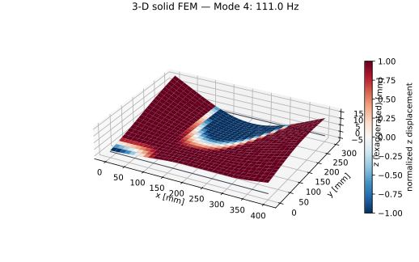
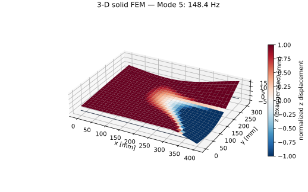
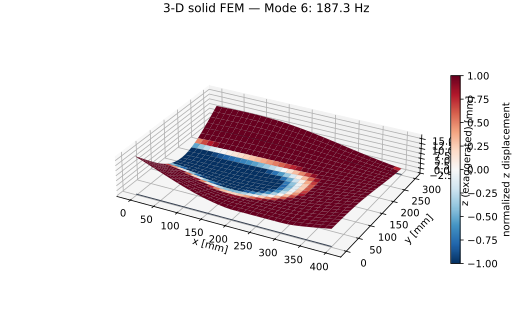
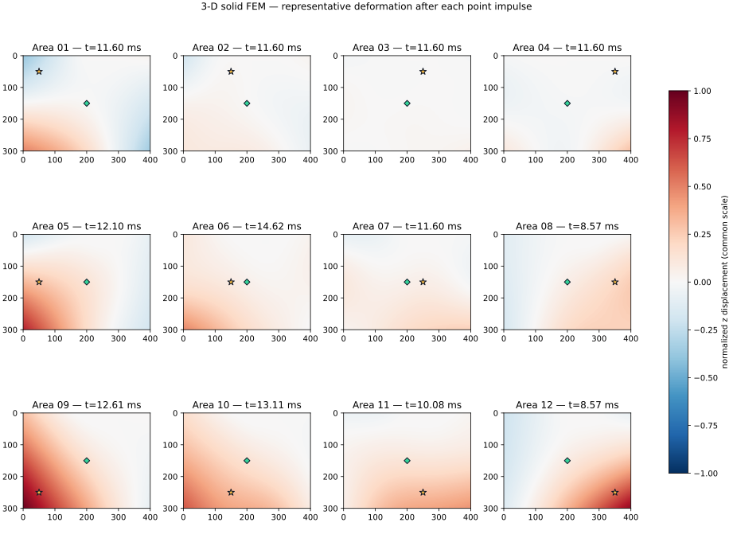

SIMULATION 04F / 5 MM PANEL
300 × 400 × 5 mm板を
3次元ソリッドFEMで解析する
300 × 400 mm板を横置き（解析座標 x=400、y=300 mm）し、板厚5 mmを2層のHEX8要素で表しました。12エリア中心のZ方向力積に対し、中央センサ (200, 150, 2.5) mm の応答を比較します。
2026年8月2日 新規解析32 × 24 × 2 = 1,536要素、2,475節点、7,425自由度で16固有モードと12打点応答を生成しました。先頭8モードは18.236～231.433 Hzです。
比較モデル完全積分一次要素のせん断ロッキング、完全固定、センサ・接着層質量の省略を含みます。絶対値はCalculiX基準解析と実測FRFで照合します。
現行400 × 200 × 3 mmの3D解析へ戻る
3次元メッシュ

32 × 24 × 2要素。オレンジがx=200–300、y=0–20 mmの固定領域、緑の菱形が中央センサです。
| 要素・自由度 | 1,536 HEX8、2,475節点 | 7,425自由度 |
|---|
| 要素寸法 | 12.5 × 12.5 × 2.5 mm | 板厚方向2要素 |
|---|
| 材料 | E=3.2 GPa、ν=0.35、ρ=1,180 kg/m³ | 等方・線形PMMA |
|---|
| 拘束 | 54節点のXYZ変位 | 固定領域を板厚全体で拘束 |
|---|
3次元固有モード

Mode 1 — 18.236 Hz
Mode 2 — 27.973 Hz
Mode 3 — 63.620 Hz
Mode 4 — 111.046 Hz
Mode 5 — 148.412 Hz
Mode 6 — 187.296 Hz
12打点の代表変形

各打点で空間RMSが最大となる時刻を抽出し、12図で同じ振幅スケールを使用しています。
12打点の過渡応答動画
60 msの物理時間をスローモーション表示します。16固有モード、減衰比1.2%、Z方向単位力積の重ね合わせです。
中央測定点の時間波形とFFT
12打点共通スケール、320 msHann窓、3.125 Hz分解能、0–1,200 Hz
2Dモデルとの比較
2D板モデル
先頭4モードは23.80、37.84、70.85、112.57 Hz。軽量で設計探索向けです。
3Dソリッドモデル
先頭4モードは18.236、27.973、63.620、111.046 Hz。板厚内応力と3方向変位を持ちます。